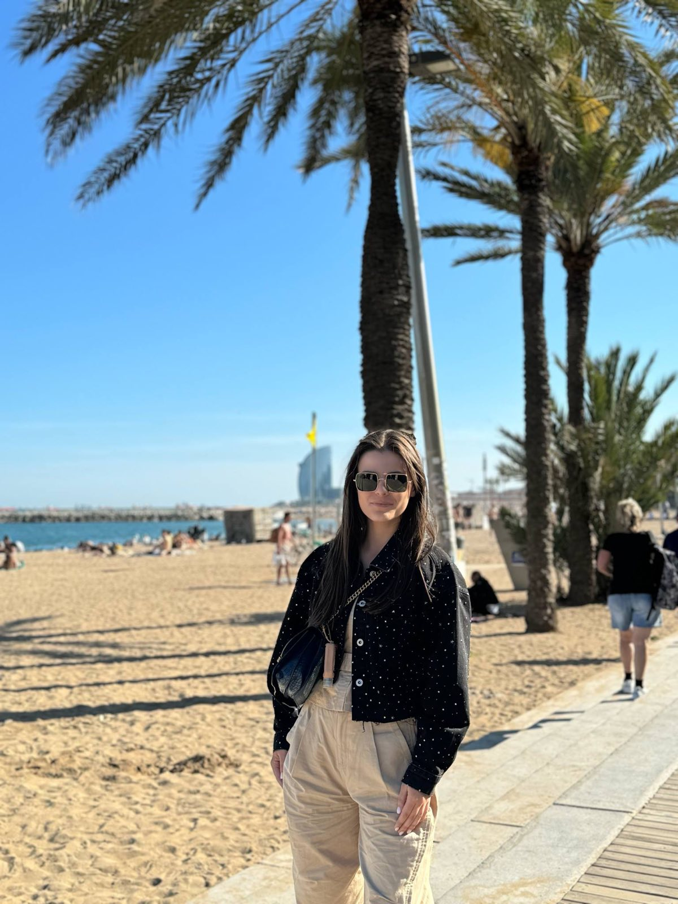

I am Snezhana Angjelkoska, born on January 10, 2005. I am currently studying at the Faculty of Computer Science and Engineering (FINKI). I enjoy listening to music, watching movies, having coffee with my friends, spending time with my family, and reading books. Something that really relaxes me is painting and designing jewelry. I love traveling and learning about different cultures around the world. At FINKI, I am gaining valuable knowledge and skills that inspire me to take on new challenges in computer science. My goal is to continue developing myself by applying my skills and knowledge in this field.
